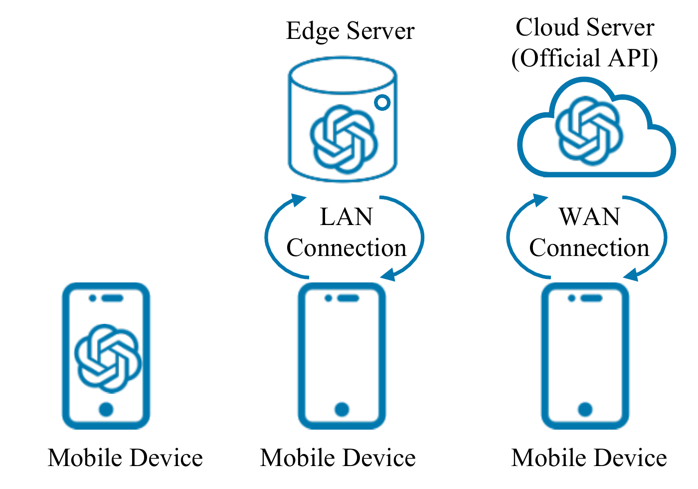

Are We There Yet? A Measurement Study of Efficiency for LLM Applications on Mobile Devices
2nd International Workshop on Foundation Models for Cyber-Physical Systems & Internet of Things (FMSys ’25), 2025
Measures where on-device language-model applications actually spend latency and memory across phone, edge, and cloud deployments.